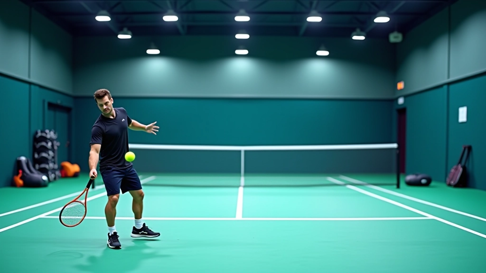
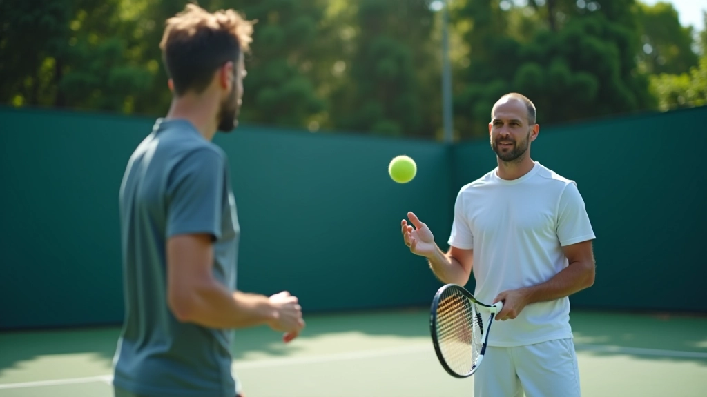

من نحن: شبكة الضربة الطائرة للتدريب
رحلتنا في تطوير لاعبي التنس الشرقيين
نركز على تمارين الضربة الطائرة والاقتراب من الشبكة، نقدم محتوى عملي وإرشادات تفصيلية لكل من يريد إتقان هذه المهارات الحيوية. منذ تأسيسنا عام 2019، نركز على جعل تدريب التنس أكثر وضوحاً وسهولة لكل لاعب.
كيف بدأنا وأين وصلنا
انطلقنا برؤية واضحة: جعل تدريب التنس في منطقة الشرق الأوسط أكثر احترافية وفعالية. كنا نرى الكثير من اللاعبين يكافحون مع الضربة الطائرة لأنهم لم يحصلوا على تعليم منظم وواضح.
اليوم، شبكة الضربة الطائرة للتدريب توفر محتوى متخصص يغطي كل جانب من جوانب هذه المهارة. نركز على الأساسيات الصحيحة، التحرك الذكي، والتطبيق العملي في الألعاب الفعلية. لا نقدم نصائح عامة — نقدم تمارين محددة وخطوات قابلة للتطبيق مباشرة.
ما يميزنا حقاً هو التركيز على التفاصيل الصغيرة التي تحدث فرقاً كبيراً. سواء كنت مبتدئاً أو لاعباً متقدماً، ستجد هنا ما تحتاج إليه.

ما نركز عليه بشدة
نحن لا نقدم محتوى عام عن التنس. بدلاً من ذلك، نتعمق في المهارات المحددة التي تجعل الفرق الحقيقي في الملعب.
الضربة الطائرة الأساسية
من المسك الصحيح للمضرب إلى وضع الجسم والحركة المناسبة. نشرح كل خطوة حتى تفهم لماذا تفعل كل شيء.
التحرك والاقتراب
الاقتراب من الشبكة ليس عشوائياً. نعلمك كيفية التحرك بذكاء والتوقيت المثالي للضربة.
التمارين العملية
تمارين محددة يمكنك تطبيقها اليوم في الملعب. لا نتحدث بنظريات فقط — نعطيك أشياء قابلة للتطبيق.
الاستراتيجية في اللعب
كيفية دمج الضربة الطائرة في خطتك الهجومية الكاملة واستخدامها بذكاء في المباريات.
كيف نعمل وما يجعلنا مختلفين

نعتقد أن الشرح الواضح هو أساس التعلم الفعّال. لا نستخدم لغة معقدة. بدلاً من ذلك، نشرح كل شيء بطريقة مباشرة وعملية تماماً.
كل دليل لدينا مكتوب من تجربة فعلية. نأخذ بعين الاعتبار الأخطاء الشائعة التي يرتكبها اللاعبون، والحلول الفعالة التي تعمل. نركز على التفاصيل الصغيرة لأنها تحدث الفرق الكبير.
محتوانا ينمو ويتطور. نستمع إلى ملاحظات القراء والمدربين. ما نكتبه اليوم قد نحسنه غداً بناءً على ما تعلمناه. هذا التزامنا بالجودة والتحسن المستمر.
مبادؤنا الأساسية
الوضوح أولاً
لا مجال للغموض. كل شيء يجب أن يكون واضحاً وسهل الفهم حتى لشخص يتعلم للمرة الأولى.
الممارسة العملية
النظرية وحدها لا تكفي. نركز على التمارين والخطوات التي تستطيع تطبيقها مباشرة.
الصدق والشفافية
نخبرك بالحقيقة. إذا كان شيء صعباً، نقول ذلك. إذا كانت هناك طرق أسهل، نوضحها.
"تدريب الضربة الطائرة يحتاج إلى فهم عميق وتمارين متكررة. لا يوجد اختصار. لكن عندما تتقنها، ستجد أن اللعب يصبح أسهل بكثير. هذا هو هدفنا — مساعدتك على الوصول إلى تلك النقطة."
— فريق شبكة الضربة الطائرة للتدريبمعلومة مهمة
المحتوى على هذا الموقع مصمم لأغراض تعليمية وإعلامية. نركز على شرح التقنيات والتمارين بناءً على خبرة عملية. تطور مهاراتك يعتمد على عوامل عديدة منها التفاني الشخصي والممارسة المستمرة والتطبيق الفعلي في الملعب. النتائج تختلف من شخص لآخر حسب مستوى اللاعب والخبرة السابقة والالتزام بالتمارين. نوصي دائماً باستشارة مدرب متخصص للحصول على تقييم شخصي وإرشاد مباشر.